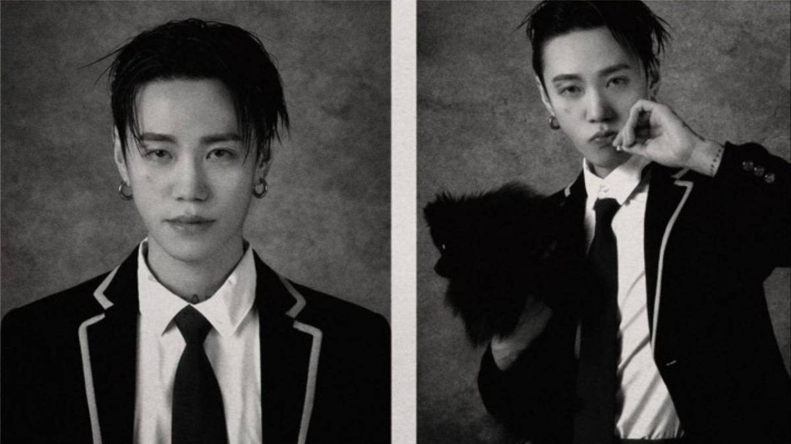
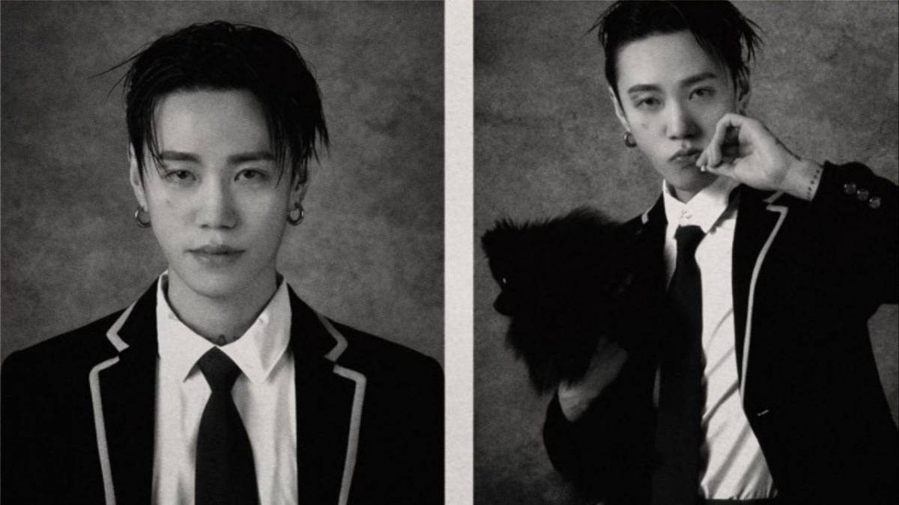
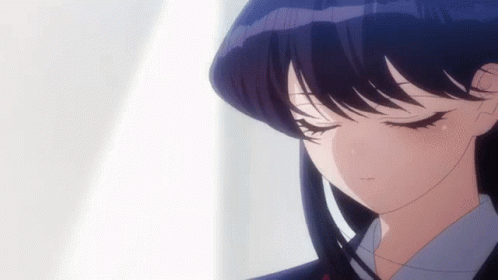
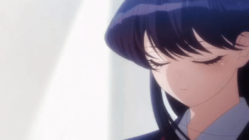

Well fashion is something I love like I can dress up the whole day.I sometimes like to express how happy I am when I wear clothes. So its always something fancy or colourful etc.I am a huge fan of accessories and i do have alot which always goes missing, well I know I am not the only one.i love hiarstyles and makeup even though i dont know how to do it but yeah i am a fan of fashion.

 

 
